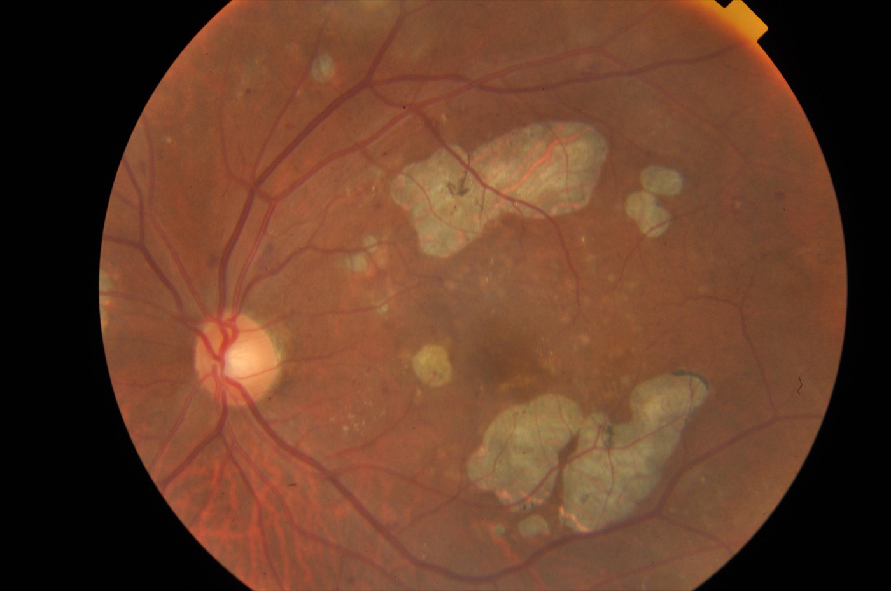
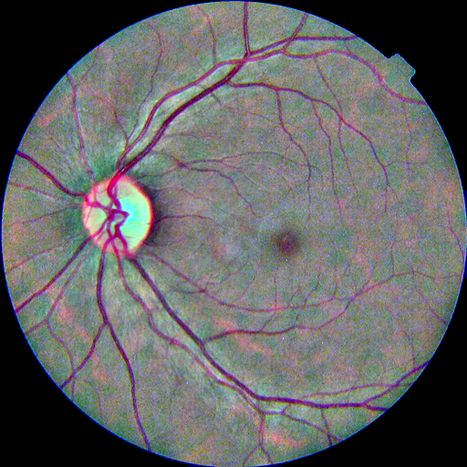
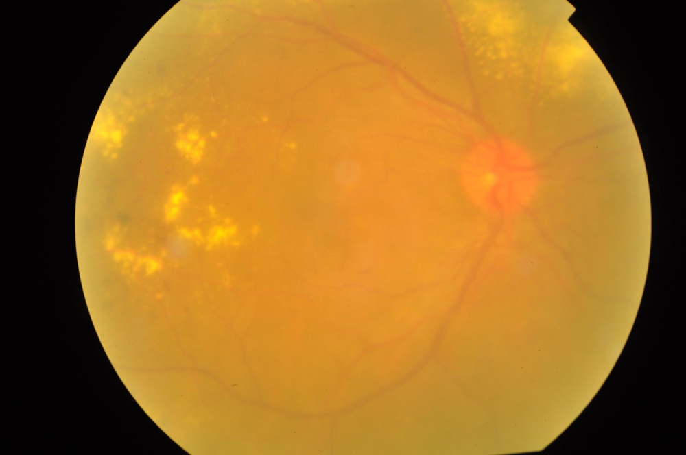

01작품 개요
배경
당뇨병성 망막병증(DR)은 당뇨 환자에게 흔한 합병증이자 성인 실명의 주요 원인입니다. 초기에는 자각 증상이 거의 없어 정기적인 안저 검사로 조기 발견하는 것이 중요하지만, 안과 전문의가 모든 영상을 직접 판독하기에는 시간과 인력이 부족합니다.
목표
안저 영상 1장으로 정상 / 비정상(DR 의심)을 판별하고, 근거가 되는 병변 후보 영역을 함께 보여주는 보조 스크리닝 시스템을 만듭니다. 의료 보조 목적이므로 속도보다 정확성·재현성·일관성을 우선했습니다.
① 놓치지 않는 판별민감도 80% 이상을 만족하는 모델만 채택, 외부 데이터로 검증
② 보여주는 AI미세동맥류·출혈·삼출물 등 4종 병변 후보를 색으로 표시
③ 믿을 수 있는 입력안저 여부·촬영 품질을 먼저 검사해 부적합 영상은 재촬영 안내
④ 안전한 데이터원본·리포트 영상을 AES-256-GCM으로 암호화하여 저장
02개발 세부 내용
시스템 구성
Flutter Web
업로드 · 진행 표시
결과 · 이력 · PDF
Frontend결과 · 이력 · PDF
⇄
FastAPI
비동기 분석 Job
품질 게이트 · 암호화 저장
Backend품질 게이트 · 암호화 저장
→
drscreen
PyTorch 학습·추론
병변 분할 · 설정 관리
AI병변 분할 · 설정 관리
Docker Compose 통합 배포단일 기준 설정 base.yamlSQLite 이력비동기 Job + 폴링 API
분석 파이프라인
1
업로드
jpg·png
10MB 이하
10MB 이하
2
안저 판별
비안저 영상
거부
거부
3
품질 평가
QuickQual
불량 시 재촬영
불량 시 재촬영
4
전처리
원형 크롭
Ben Graham 정규화
Ben Graham 정규화
5
AI 추론
분류 + 병변 분할
메타 분류기 융합
메타 분류기 융합
6
결과·저장
리포트·이력
AES 암호화
AES 암호화
AI 모델 — 분류기 + 병변 분할기 융합

입력 안저 영상
512 × 512
512 × 512
DR 분류기 · EfficientNet-B5
자기지도 사전학습(SimCLR) → 보조 병변 분할 손실 + 게이트 풀링 → 비정상 확률
병변 분할기 · ResNet50 U-Net
MA · HE · EX · SE 4채널 픽셀 분할 → 병변별 존재 점수·면적 비율
메타 분류기
StandardScaler + 로지스틱 회귀로 두 근거를 결합
정상 / 비정상
+ 병변 후보 맵
학습·검증 데이터 (공개 데이터셋 6종)
| 용도 | 데이터셋 | 규모·특징 |
|---|---|---|
| 분류 학습 | APTOS 2019 · IDRiD · Messidor | 다기관·다장비 안저 영상, 자기지도 사전학습 5,378장 |
| 병변 분할 | DDR-SEG · TJDR · MAPLES-DR · IDRiD | 픽셀 단위 병변 마스크 1,156장 (532 / 448 / 122 / 54) |
| 외부 검증 | DDR | 12,522장 — 임계값 보정 20% / 성능 평가 80% 분리 |
핵심 기술
SimCLR 자기지도 사전학습FDA 도메인 일반화보조 병변 분할 + 게이트 풀링U-Net 4종 병변 분할로지스틱 메타 분류기 융합
02개발 과정 · 신뢰성 설계
외부 데이터 일반화 성능 향상 (DDR AUROC)
60여 개 실험 설정을 버전별로 기록·비교하며 개선. 외부 데이터 성능이 떨어지는 기법(MixStyle, SWAD, IBN 등)은 근거와 함께 폐기했습니다. (마지막 값은 DDR 80% 홀드아웃 기준)
신뢰성을 위한 설계
민감도 우선 체크포인트검증 민감도 ≥ 0.80을 만족하는 후보 중 AUROC 최고 모델만 저장 — 환자를 놓치는 위음성 억제
보정·평가 데이터 분리임계값은 DDR 20%에서만 정하고 나머지 80%로 성능 보고 — 낙관적 수치 방지
지름길(shortcut) 감사배경 스타일 교환 실험으로 분류기의 지름길 학습을 점검 → 병변 근거는 독립 분할 모델로 분리
정직한 설명 문구“병변 때문에 비정상”이 아닌 “비정상 판정 + 별도 검출된 병변 후보”로 표현
03구현 결과
병변 후보 시각화 예시 (실제 배포 모델 출력)
4종 병변 후보 검출

병변 후보 거의 없음

재촬영 안내 (bad 0.92)
미세동맥류 MA
출혈 HE
경성삼출물 EX
면화반 SE
판별 성능 · 병변 분할 성능
AI: 정상
AI: 비정상
실제
정상
정상
4,547TN
466FP
실제
비정상
비정상
843FN
4,162TP
DDR 외부 홀드아웃 10,018장 · 정확도 86.9% · F1 0.864